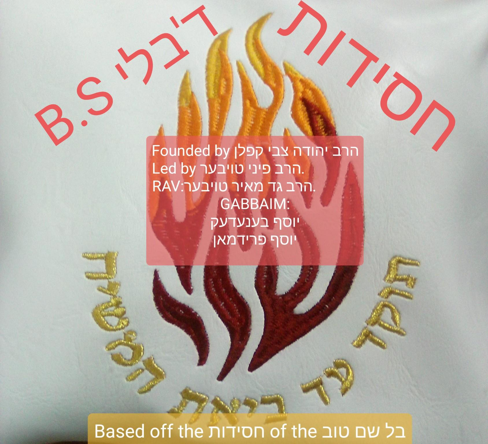

Bli B.S. (a.k.a BBS) is a new chasidus founded by Harav Yahuda Tzvi Kaplan, and is currently being led by Harav Pinny Tauber. The Rav is Harav Gad Tauber Shlita, and the 2 Gabbaim are Yosef Benedak and Yosef Friedmen. Our goal is to make a chasidus without any bad stuff as the name suggests.
If you would like to get involved, speak to one of the staff.
 Learn More